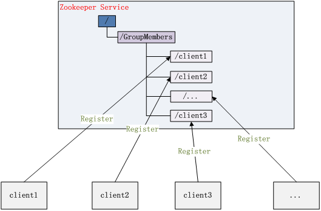

Zookeeper介绍
记录学习
zookeeper过程中学习的知识
概述
概念
Zookeeper是开源高可用的分布式协调服务, 其中一致性实现是基于zab协议， Zookeeper atomic broadcast protocol。
数据模型
Zookeeper会维持一个具有层次关系的数据模型，它非常类似于一个标准的文件系统。

Zookeeper 这种数据结构有如下这些特点：
- 每个子目录项如 NameService 都被称作为 znode，这个 znode 是被它所在的路径唯一标识，如 Server1 这个 znode 的标识为 /NameService/Server1
- znode 可以有子节点目录，并且每个 znode 可以存储数据，注意 EPHEMERAL 类型的目录节点不能有子节点目录
- znode 是有版本的，每个 znode 中存储的数据可以有多个版本，也就是一个访问路径中可以存储多份数据
- znode 可以是临时节点，一旦创建这个 znode 的客户端与服务器失去联系，这个 znode 也将自动删除，Zookeeper 的客户端和服务器通信采用长连接方式，每个客户端和服务器通过心跳来保持连接，这个连接状态称为 session，如果 znode 是临时节点，这个 session 失效，znode 也就删除了
- znode 的目录名可以自动编号，如 App1 已经存在，再创建的话，将会自动命名为 App2
- znode 可以被监控，包括这个目录节点中存储的数据的修改，子节点目录的变化等，一旦变化可以通知设置监控的客户端，这个是 Zookeeper 的核心特性，Zookeeper 的很多功能都是基于这个特性实现的，后面在典型的应用场景中会有实例介绍
应用场景
Zookeeper 从设计模式角度来看，是一个基于观察者模式设计的分布式服务管理框架，它负责存储和管理大家都关心的数据，然后接受观察者的注册，一旦这些数据的状态发生变化，Zookeeper 就将负责通知已经在 Zookeeper 上注册的那些观察者做出相应的反应，从而实现集群中类似 Master/Slave 管理模式，关于 Zookeeper 的详细架构等内部细节可以阅读 Zookeeper 的源码
统一命名服务(Name Service)
分布式应用中，通常需要有一套完整的命名规则，既能够产生唯一的名称又便于人识别和记住，通常情况下用树形的名称结构是一个理想的选择，树形的名称结构是一个有层次的目录结构，既对人友好又不会重复。说到这里你可能想到了 JNDI，没错 Zookeeper 的 Name Service 与 JNDI 能够完成的功能是差不多的，它们都是将有层次的目录结构关联到一定资源上，但是 Zookeeper 的 Name Service 更加是广泛意义上的关联，也许你并不需要将名称关联到特定资源上，你可能只需要一个不会重复名称，就像数据库中产生一个唯一的数字主键一样。
Name Service 已经是 Zookeeper 内置的功能，你只要调用 Zookeeper 的 API 就能实现。如调用 create 接口就可以很容易创建一个目录节点。
配置管理(Configuration Management)
配置的管理在分布式应用环境中很常见，例如同一个应用系统需要多台 PC Server 运行，但是它们运行的应用系统的某些配置项是相同的，如果要修改这些相同的配置项，那么就必须同时修改每台运行这个应用系统的 PC Server，这样非常麻烦而且容易出错。
像这样的配置信息完全可以交给 Zookeeper 来管理，将配置信息保存在 Zookeeper 的某个目录节点中，然后将所有需要修改的应用机器监控配置信息的状态，一旦配置信息发生变化，每台应用机器就会收到 Zookeeper 的通知，然后从 Zookeeper 获取新的配置信息应用到系统中。
例如QConf，360开源的配置中心管理。

集群管理(Group Memberhship)
Zookeeper 能够很容易的实现集群管理的功能，如有多台 Server 组成一个服务集群，那么必须要一个“总管”知道当前集群中每台机器的服务状态，一旦有机器不能提供服务，集群中其它集群必须知道，从而做出调整重新分配服务策略。同样当增加集群的服务能力时，就会增加一台或多台 Server，同样也必须让“总管”知道。
Zookeeper 不仅能够帮你维护当前的集群中机器的服务状态，而且能够帮你选出一个“总管”，让这个总管来管理集群，这就是 Zookeeper 的另一个功能 Leader Election。
它们的实现方式都是在 Zookeeper 上创建一个 EPHEMERAL(ephemeral 短命) 类型的目录节点，然后每个 Server 在它们创建目录节点的父目录节点上调用 getChildren(String path, boolean watch) 方法并设置 watch 为 true，由于是 EPHEMERAL 目录节点，当创建它的 Server 死去，这个目录节点也随之被删除，所以 Children 将会变化，这时 getChildren上的 Watch 将会被调用，所以其它 Server 就知道已经有某台 Server 死去了。新增 Server 也是同样的原理。
Zookeeper 如何实现 Leader Election，也就是选出一个 Master Server。和前面的一样每台 Server 创建一个 EPHEMERAL 目录节点，不同的是它还是一个 SEQUENTIAL 目录节点，所以它是个EPHEMERAL_SEQUENTIAL 目录节点。之所以它是 EPHEMERAL_SEQUENTIAL 目录节点，是因为我们可以给每台 Server 编号，我们可以选择当前是最小编号的 Server 为 Master，假如这个最小编号的 Server 死去，由于是 EPHEMERAL 节点，死去的 Server 对应的节点也被删除，所以当前的节点列表中又出现一个最小编号的节点，我们就选择这个节点为当前 Master。这样就实现了动态选择 Master，避免了传统意义上单 Master 容易出现单点故障的问题。

共享锁
共享锁在同一个进程中很容易实现，但是在跨进程或者在不同 Server 之间就不好实现了。Zookeeper 却很容易实现这个功能，实现方式也是需要获得锁的 Server 创建一个 EPHEMERAL_SEQUENTIAL 目录节点，然后调用 getChildren方法获取当前的目录节点列表中最小的目录节点是不是就是自己创建的目录节点，如果正是自己创建的，那么它就获得了这个锁，如果不是那么它就调用 exists(String path, boolean watch) 方法并监控 Zookeeper 上目录节点列表的变化，一直到自己创建的节点是列表中最小编号的目录节点，从而获得锁，释放锁很简单，只要删除前面它自己所创建的目录节点就行了。
队列管理
Zookeeper 可以处理两种类型的队列：
- 当一个队列的成员都聚齐时，这个队列才可用，否则一直等待所有成员到达，这种是同步队列。
- 队列按照 FIFO 方式进行入队和出队操作，例如实现生产者和消费者模型
其他
zookeeper的数据模型类似于标准文件系统，是分级的树状的文件系统，每个树状节点为一个znodeznode每一个znode存储着数据之外，还存储着一些其他的信息，例如版本信息(用于版本校验)，时间戳等等watches: 每一个客户端可用设置对应znode的监控。当对于znode的数据发生改变时，watch触发，zookeeper向客户端发送通知(notification)ephemeral node: 短暂节点，短暂znode客户端会话结束时，zookeeper会将该短暂znode删除，短暂znode不可以有子节点